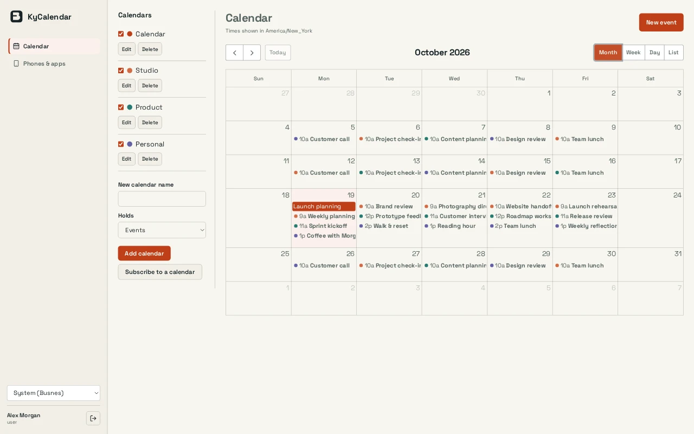

Sync with the apps you have
Calendar on iPhone and Mac, DAVx5 on Android and Thunderbird connect over CalDAV, with incremental sync so phones only fetch what changed.
KyCalendar / Calendars & scheduling
Personal and shared calendars in your browser and CalDAV apps, with local accounts or optional KyIdentity sign-in.
Open source (MIT) · Self-hostedScreenshots
Example screens from local builds with fictional data. Appearance varies by version.

Inside KyCalendar
Calendar on iPhone and Mac, DAVx5 on Android and Thunderbird connect over CalDAV, with incremental sync so phones only fetch what changed.
Each phone gets its own app password, shown once and revocable on its own, so a lost device never means changing your sign-in.
Month, week, day and list views with colour-coded calendars. Drag to reschedule, and change one occurrence of a repeating event or the whole series.
Administrators create shared calendars and grant groups reader, editor or manager access. Remove someone from a group and their access ends at the next sync.
Local passwords with authenticator codes and recovery codes, or single sign-on through KyIdentity or another OpenID Connect provider. With KyIdentity, SCIM keeps users and groups in step.
CalDAV comes from go-webdav, calendar data from go-ical and rrule-go, and the web view from FullCalendar. Ky supplies the sign-in, access rules and sealed backups that tie them together.
How it fits together
Capsule backups to KyRecovery cover SQLite installations; with PostgreSQL, back up the database and the encryption key separately. Administrators manage the instance and cannot see anyone’s events.
Read the Busnes.app privacy policy. For data on an independently operated installation, contact its operator.
Next step
The README covers installation, phone setup, sign-in, group calendars and recovery.